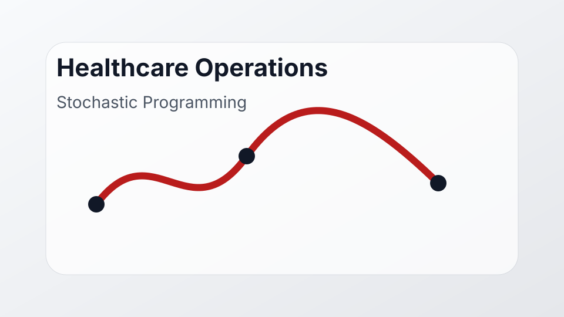

Course project · healthcare operations
Outpatient Clinic Stochastic Programming

For a stochastic programming course project, I modeled an outpatient clinic scheduling problem with uncertainty in patient no-shows, walk-in arrivals, and service times.
Focus
- Two-stage stochastic programming for appointment scheduling.
- Tradeoffs among patient waiting, provider idle time, overtime, and rejected walk-ins.
- Healthcare operations as an application area for optimization under uncertainty.
Status
Completed course project.